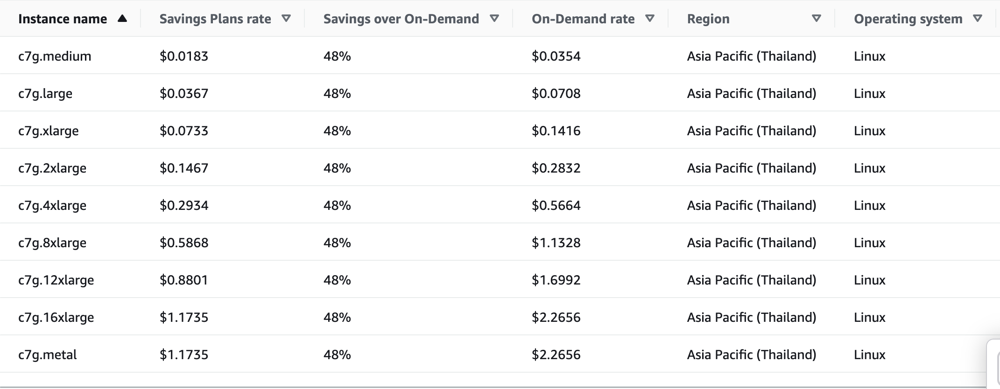
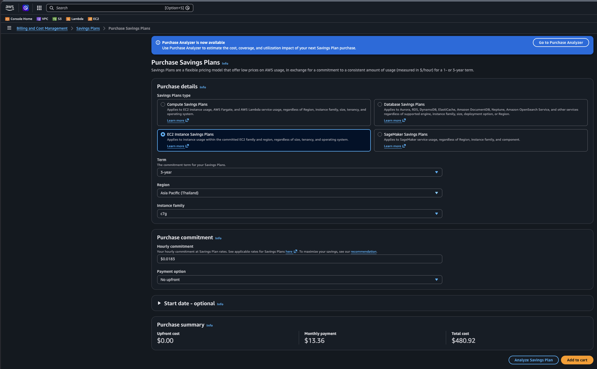

ลดค่าใช้จ่าย AWS ด้วย EC2 Instance Savings Plans
May 2026 · Peerapat A
AWS bills have a habit of growing quietly. One of the easiest ways to push them back down — without changing a single line of code — is an EC2 Instance Savings Plan. Here is what it is, how to pick the right one, and what real savings look like.
What is a Savings Plan?
A Savings Plan is a deal between you and AWS: you promise to spend a fixed amount per hour for 1 or 3 years, and AWS gives you a discount on everything that matches. No capacity reservations, no complex configuration — just a spending commitment.
There are three types:
- EC2 Instance Savings Plan — biggest discount (~40–60%), but locked to one instance family in one region.
- Compute Savings Plan — smaller discount, but works across any instance family, region, Fargate, and Lambda.
- SageMaker Savings Plan — for ML training and inference workloads only.
For teams with stable EC2 usage in a specific region, the EC2 Instance Savings Plan gives the best return.
How It Works
You pick an instance family (e.g. c7g) and a region. Within that family,
you can freely change instance size, OS, and tenancy — the discount follows.
What it does not cover: switching families (e.g. c7g → m7i) or moving to a different region.
The screenshot below shows real AWS pricing for the c7g family in Asia Pacific (Thailand).
Every size gets a 48% discount off On-Demand under a Savings Plan.

A c7g.xlarge drops from $0.1416/hr On-Demand to $0.0733/hr under the plan.
Run it 24/7 for a year and that is ~$560 saved on a single instance. Multiply across a fleet and the numbers get meaningful fast.
Choosing a Payment Option
Each plan comes in three payment flavours:
- All Upfront — pay the full amount today. Deepest discount.
- Partial Upfront — half now, half spread monthly. Middle ground.
- No Upfront — monthly payments only. Lowest discount, zero cash outlay today.
If your workload is stable and the budget allows it, All Upfront on a 3-year term delivers the best return. If you are unsure, start with No Upfront on a 1-year term — you can always buy more later. You cannot cancel or reduce a plan once purchased.
How Much to Commit
The most common mistake is over-committing. If you buy more than you use, the unused portion is simply wasted. The safe approach is to commit to your minimum steady usage — the amount that is always running, even on quiet nights and weekends.
A simple sizing process:
- Open Cost Explorer → Savings Plans → Recommendations.
- Set lookback to 30 days, term to 1 year, payment to No Upfront.
- Take the recommended commitment and buy at 70–80% of it.
- Review coverage and utilization after 30 days, then top up if needed.
Starting conservative keeps utilization high. You can always layer on more commitment as you gain confidence.
Purchasing a Plan
Once you know how much to commit, the purchase takes only a few clicks in the AWS console. Navigate to Cost Explorer → Savings Plans → Purchase Savings Plans, select EC2 Instance Savings Plans, choose your instance family, region, term, and payment option, then enter the hourly commitment amount.

Review the estimated monthly savings shown on the confirmation screen before clicking Purchase. The plan becomes active within minutes and starts applying discounts to matching usage immediately. Remember: the commitment cannot be cancelled or reduced, so double-check the hourly amount before confirming.
Two Numbers to Watch
Once your plan is active, track these weekly in Cost Explorer:
- Coverage — what share of your EC2 spend is protected by a Savings Plan. Aim for 80–90%. Below 70% means you are leaving savings on the table.
- Utilization — what share of your committed spend is actually being used. Aim for above 95%. Below 80% means you over-bought.
When to Skip It
- New workloads — wait for 30–60 days of usage data before committing.
- Planning to switch instance families — use a Compute Savings Plan instead so the discount travels with you.
- Batch or ML jobs — Spot Instances give 60–90% off and are almost always the better call here.
- Dev/test that shuts down at night — schedule the stop first, then see if the remaining baseline is worth committing to.
Bottom Line
EC2 Instance Savings Plans are one of the lowest-effort cost reductions available on AWS. No architecture changes, no migrations — just an analysis and a purchasing decision. Commit to your floor, watch your coverage and utilization, and layer on more as usage stabilizes. Done right, it is realistic to cut your EC2 bill by 40–60% on steady workloads.
Pricing shown is for Asia Pacific (Thailand) as of mid-2026. Always verify current rates in the AWS Pricing Calculator before purchasing.
© peerapat.cc